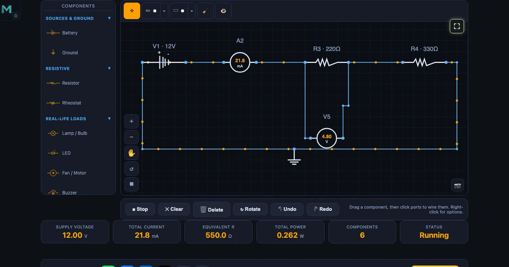
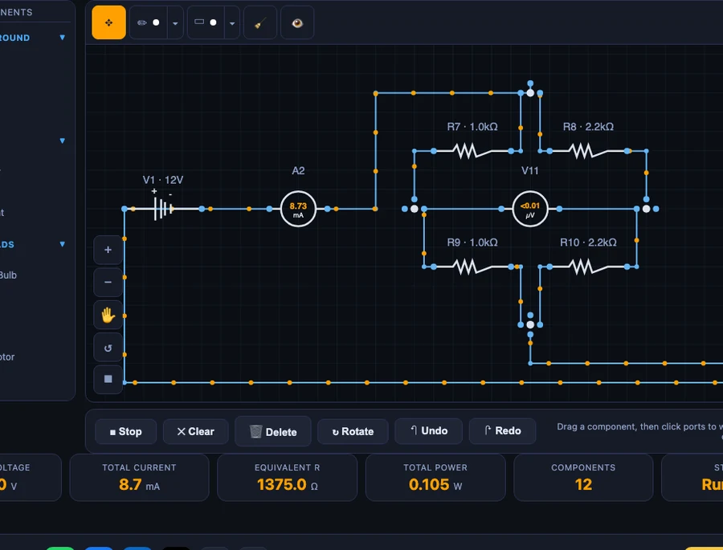

Ohm’s Law Simulator — Build DC Circuits Visually

- An Ohm’s Law simulator lets you build a DC circuit by dragging a battery and resistors onto a canvas, wiring the ports into a loop, and pressing Run; it solves V = IR (the current through a resistor equals the voltage across it divided by its resistance) and shows live V, I, R and P meters.
- Series resistances add (Rs = R1 + R2 + …) while parallel resistances combine reciprocally (1/Rp = 1/R1 + 1/R2 + …), so parallel resistance is always smaller than the smallest branch.
- It visually verifies Kirchhoff’s laws with on-canvas voltmeters and ammeters, and includes a voltage divider (Vout = Vin × R2/(R1 + R2)) and a Wheatstone bridge that nulls to zero when R1/R2 = R3/R4.
Week one of any electrical module begins the same way: three letters on the whiteboard — V, I, R — and the equation V = IR. Students copy it down, nod politely, and then forget which variable they’re solving for the moment the numbers change. The formula is not the hard part. The hard part is that a circuit on paper does not do anything. There is no current to watch, no voltage drop to point at, no lamp that glows brighter when the supply is turned up.
That is the gap a good Ohm’s Law simulator closes in under ninety seconds. Drag a battery. Drop a resistor. Click two ports to wire them. Press Run. The simulator solves the circuit using Modified Nodal Analysis and animates electrons along every wire, while live meters on the canvas display voltage and current as numbers. V = IR stops being an equation and becomes a picture — and pictures are what students actually remember.
Ohm’s Law in One Sentence — and Why Students Still Get It Wrong
Ohm’s Law states that the current through a resistor is directly proportional to the voltage across it and inversely proportional to its resistance:
\[V = IR \;\longrightarrow\; I = \dfrac{V}{R} \;\longrightarrow\; R = \dfrac{V}{I}\]
Three rearrangements. Every student can quote them. Ask the same student, after building a two-resistor series circuit, which resistor drops more voltage and you will get a pause. The issue is not the maths — it is the lack of a physical intuition for what each term feels like. In a series circuit a larger resistor eats more of the supply voltage. In a parallel circuit a smaller resistor pulls more of the supply current. Those rules cannot be memorised out of a formula; they have to be seen.
The simulator ships with twelve pre-built circuits that cover every scenario a first-year electrical student will ever encounter in an exam: Single Resistor, Series (2R), Parallel (2R), Mixed (R1 + R2‖R3), LED Circuit, Lamp & Switch, Fan Circuit, Meters Demo, Voltage Divider, Wheatstone Bridge, 3-Lamp Parallel and Two-Loop (KCL). Each is a single click. None needs a lab bench.
Series vs Parallel — The Two Patterns Everything Else Is Built From
Almost every DC circuit reduces to a combination of two basic building blocks. Get these right and the rest follow.
Series — components connected end-to-end in a single loop. The same current flows through every component, and the supply voltage splits between them in proportion to their resistances. Total resistance adds directly:
\[R_s = R_1 + R_2 + R_3 + \cdots\]
In the hero image above the circuit is a 12 V supply feeding 220 Ω and 330 Ω in series. The simulator calculates Rtotal = 550 Ω, I = 12 / 550 = 0.0218 A = 21.8 mA, and a voltage drop across R3 (the 220 Ω resistor) of 21.8 mA × 220 Ω = 4.80 V — exactly what the voltmeter displays. The maths and the meter agree.
Parallel — components connected across the same two nodes, each forming its own branch. Every branch sees the full supply voltage, and the branch currents add. Total resistance follows the reciprocal rule:
\[\dfrac{1}{R_p} = \dfrac{1}{R_1} + \dfrac{1}{R_2} + \dfrac{1}{R_3} + \cdots\]
For two resistors in parallel the shortcut is Rp = R1R2 / (R1 + R2). Parallel resistance is always smaller than the smallest individual resistor — a counter-intuitive result that the simulator makes instantly obvious. Load the Parallel (2R) preset with two equal resistors and the equivalent resistance readout drops to half the value of either one. Swap one resistor for a smaller value and the total drops further. Students stop second-guessing the formula within three minutes.
Verifying Kirchhoff’s Laws Without a Lab
Ohm’s Law handles a single resistor. As soon as a circuit has more than one loop, Kirchhoff’s laws take over. Both laws are simple statements, but hand calculations on paper hide a lot of the working — and that is where students get lost.
Kirchhoff’s Voltage Law (KVL). The sum of voltages around any closed loop is zero. The EMF supplied by the battery equals the total voltage dropped across the resistors in the loop:
\[\sum V_{\text{supply}} = \sum (IR)_{\text{drops}}\]
Place a voltmeter across every component in the loop. The readings must add to the supply voltage. In the series preset above, 4.80 V (across 220 Ω) + 7.20 V (across 330 Ω) = 12.00 V — exactly the supply. No rearranging. No algebra. The numbers are on the screen.
Kirchhoff’s Current Law (KCL). The sum of currents entering a junction equals the sum leaving. Used in the Two-Loop preset, this is where KCL really shows its value — at the central junction, the current into the node equals the current out of both branches, and the ammeters display all three values simultaneously. Hand-check the sum. It works. Every time.
This is why a simulator is worth the time to set up in class. Analytical verification of KVL and KCL in a textbook takes half a page of sign conventions. Visual verification takes two meters and one glance. The understanding is the same; the friction is not.
The Voltage Divider — The Most Useful Circuit in Electronics
Two resistors in series across a supply form a voltage divider. The output is taken across one of them, and the result is a fixed fraction of the input voltage determined entirely by the ratio of the two resistors:
\[V_{\text{out}} = V_{\text{in}} \times \dfrac{R_2}{R_1 + R_2}\]
The divider shows up in every electronic circuit ever built — biasing transistors, setting reference voltages, scaling a sensor’s output to an ADC input range, level-shifting logic signals. Load the Voltage Divider preset, open the component popover on one of the resistors, and type a new value. The output voltage updates instantly. Students can test any ratio in seconds and watch the output track their numbers.
One teaching trick that consistently works: ask students what happens to Vout if both resistors are doubled. Most will guess the output doubles. It does not — the ratio is unchanged, so the output voltage is the same. The current halves, but the voltage stays put. The simulator shows this in one click and a dozen words of explanation fall into place that would have taken ten minutes of whiteboard time.

The Wheatstone Bridge — Precision from a Null Reading
The Wheatstone bridge is the voltage divider’s clever older sibling. Instead of one divider, build two — side by side, sharing the same supply — and put a voltmeter (or galvanometer) across the middle. The balance condition is simple:
\[\dfrac{R_1}{R_2} = \dfrac{R_3}{R_4} \;\longrightarrow\; V_{\text{mid}} = 0\]
When the ratios match, the two dividers produce the same midpoint voltage and the galvanometer reads zero regardless of the supply. This null-reading trick is why the Wheatstone bridge has survived for nearly two centuries as the gold standard for precision resistance measurement and for reading strain gauges in load cells and pressure sensors. A small imbalance produces a small deflection proportional to the change — the tiny resistance shift of a deforming strain gauge becomes a measurable voltage.
Load the Wheatstone Bridge preset. Note the galvanometer reading. Right-click any arm and change its resistance by 10 Ω. The bridge immediately unbalances and a non-zero voltage appears across the centre. Restore the original value and it returns to zero. That is exactly the mechanism a strain-gauge load cell uses to weigh a truck.
How to Use the Simulator in Class and for Revision
A simulator is only as useful as the structure placed around it. A few approaches I’ve found work well for both diploma-level electrical modules and TVET introductory electronics.
Start with Simulate mode and the presets. Present V = IR on the board. Switch to the simulator, load the Single Resistor preset, and show the three readouts. Now change the supply to 6 V. Ask the class to predict the new current before clicking Run. This is the first moment the formula becomes a tool rather than a definition to memorise.
Run the series-versus-parallel comparison. Load Series (2R) with two equal resistors. Note the equivalent resistance readout. Switch to Parallel (2R) with the same values. The equivalent resistance is now a quarter. Walk through why: in series the resistances add, in parallel they combine reciprocally. The four-to-one ratio for equal resistors is memorable in a way that Rp = R1R2 / (R1 + R2) never is.
Build a circuit from scratch, not from a preset. Drag a battery and two resistors from the palette. Wire them in series by clicking ports. Then rewire them in parallel by deleting the middle wire and adding two new connections. The manual wiring cements the topology difference better than any diagram, because the student has to think about which node every wire actually lands on.
Switch to Explore mode for self-study. Explore mode surfaces a concept panel alongside the canvas: laws, components, mode explanations, and worked derivations. Students studying at home who hit a roadblock have the theory and the interactive circuit side by side without switching tabs.
Practice mode for problem-solving drills. Practice generates randomised V, I, R problems and asks for numerical answers. Quiz mode scores five questions and rates performance. These modes are where understanding becomes automatic — the difference between knowing Ohm’s Law and being able to apply it quickly under exam conditions.
For a broader argument about why interactive virtual tools outperform printed diagrams for engineering skill building — and why the same principle applies to measurement, stress analysis, and machine design — see our article on virtual measuring instruments for engineering students.
Try It Yourself
All tools below are free — no account, no download. Open them in a browser and start experimenting.
Key Takeaways
- V = IR is the foundation of every DC circuit — every other analysis is either this applied repeatedly or a shortcut built on top of it.
- Series resistances add (Rs = R1 + R2); parallel resistances combine reciprocally (1/Rp = 1/R1 + 1/R2). Parallel is always smaller than the smallest branch.
- Kirchhoff’s Voltage Law is proved on-screen with voltmeters; Kirchhoff’s Current Law is proved with ammeters at any junction. No algebra required.
- A voltage divider outputs Vout = Vin × R2 / (R1 + R2) — the single most useful circuit in electronics, from sensors to biasing.
- A Wheatstone bridge balances when R1/R2 = R3/R4; the null reading is what makes strain-gauge and precision measurement possible.
- The NHIT VisualLab Ohm’s Law tool ships with twelve presets, four modes (Simulate / Explore / Practice / Quiz), drag-and-drop wiring, and live meter readings — free, in a browser, no login.
Frequently Asked Questions
How do you use an Ohm’s Law simulator to build a DC circuit?
Open the simulator, drag a battery and at least one resistor from the components palette onto the canvas, click the ports to wire them into a closed loop, then press Run Circuit. The simulator solves V = IR using Modified Nodal Analysis and animates current flow with live voltage and current readings on every component.
What is the difference between series and parallel in a DC circuit?
In a series circuit the same current flows through every component and the voltages add up, so Rtotal = R1 + R2. In a parallel circuit every branch sees the same voltage and the branch currents add, so 1/Rtotal = 1/R1 + 1/R2. Series resistance is always larger than the largest resistor; parallel resistance is always smaller than the smallest.
How do you verify Kirchhoff’s Voltage Law in a simulator?
Place voltmeters across each component in the loop and add up the drops — they must equal the supply EMF. The simulator displays live voltage readings so KVL can be confirmed in one glance for any loop, including multi-loop topologies where the sum around every closed path is zero.
When is a Wheatstone bridge balanced?
A Wheatstone bridge is balanced when R1/R2 = R3/R4. At balance the centre voltmeter reads zero regardless of supply voltage. Any imbalance produces a non-zero reading proportional to the change — the basis of strain-gauge load cells, pressure sensors, and precision resistance instruments.
What does a voltage divider output?
Vout = Vin × R2 / (R1 + R2). The ratio of resistors sets the output as a fixed fraction of the input. Dividers are used for biasing, level-shifting, and converting sensor resistance changes into measurable voltages.
Ohm’s Law is one of those rare foundations that every later topic in electrical engineering sits on top of — from transistor biasing to transformer analysis to power distribution. Getting it to click early matters, and getting it to click deeply matters more.
A simulator accelerates both. If you’re a student, load the tool before your next written exercise and work the problems twice — once on paper, once on screen. If you’re teaching, put it on the projector and let students drive. The Ohm’s Law simulator is free and ready when you are.